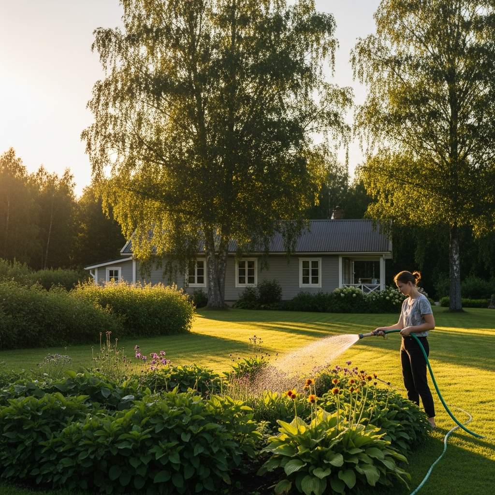

Investīcija uz mūžu
Bezmaksas attīrītais ūdens — tieši tavam dārzam.
Greenwaste.Tech
Akcija · 2026Līdz 1. februārim
Vienīgais šāda veida LV
Investē
vienreiz.
Taupi mūžu.
Divfāžu biofiltrācijas kanalizācija. 0€ ekspluatācija. 5 gadu garantija. Sertificēts EN12566-3 + CE.